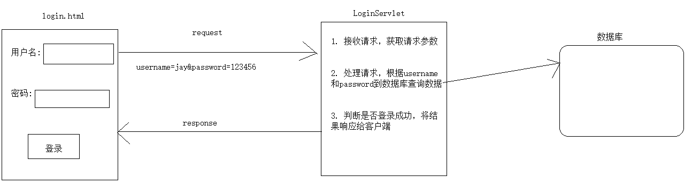

Request&Response¶
第一章 Request¶
1. 学习目标¶
- 了解Request的概念
- 了解Request的组成部分
- 掌握Request获取请求行的信息
- 掌握Request获取请求头的信息
- 掌握Request获取请求参数
- 掌握解决请求参数乱码
- 掌握Request域对象
- 掌握请求转发
2. 内容讲解¶
2.1 Request概述¶
2.1.1 Request的概念¶
在Servlet API中，定义了一个HttpServletRequest接口，它继承自ServletRequest接口，专门用来封装HTTP请求消息。由于HTTP请求消息分为请求行、请求头和请求体三部分，因此，在HttpServletRequest接口中定义了获取请求行、请求头和请求消息体的相关方法.
用我们自己的话来理解: Request就是服务器中的一个对象，该对象中封装了HTTP请求的请求行、请求头和请求体的内容
2.1.2 Request的组成¶
- 请求行: 包含请求方式、请求的url地址、所使用的HTTP协议的版本
- 请求头: 一个个的键值对，每一个键值对都表示一种含义，用于客户端传递相关的信息给服务器
- 请求体: POST请求有请求体，里面携带的是POST请求的参数，而GET请求没有请求体
2.1.3 Request的作用¶
-
获取HTTP请求三部分内容(行,头,体)
-
进行请求转发跳转
-
作为请求域对象进行存取数据
2.2 Request获取HTTP请求的内容¶
2.2.1 获取请求头的API¶
- getMethod();获取请求方式
- getContextPath(); 获得当前应用上下文路径
- getRequestURI();获得请求地址，不带主机名
- getRequestURL()；获得请求地址，带主机名
public class ServletDemo01 extends HttpServlet {
@Override
protected void doPost(HttpServletRequest request, HttpServletResponse response) throws ServletException, IOException {
doGet(request, response);
}
@Override
protected void doGet(HttpServletRequest request, HttpServletResponse response) throws ServletException, IOException {
//使用request对象获取请求行的信息:
//1. 获取请求的方式(可能会用)
String method = request.getMethod();
//System.out.println("请求方式为:" + method);;
//2. 获取请求的url: 统一资源定位符 http://localhost:8080/requestDemo/demo01
String url = request.getRequestURL().toString();
//System.out.println("此次请求的url是：" + url);
//3. 获取请求的uri: 统一资源标识符,在url的基础上省略了服务器路径"http://loaclhost:8080"
String uri = request.getRequestURI();
System.out.println(uri);
}
}
2.2.2 获取请求头的API¶
- getHeader(String name), 根据请求头的name获取请求头的值
public class ServletDemo02 extends HttpServlet {
@Override
protected void doPost(HttpServletRequest request, HttpServletResponse response) throws ServletException, IOException {
doGet(request, response);
}
@Override
protected void doGet(HttpServletRequest request, HttpServletResponse response) throws ServletException, IOException {
//根据请求头的name获取value
//目标:获取name为user-agent的请求头的信息
//user-agent请求头中包含的是客户端浏览器信息
String header = request.getHeader("user-agent");
System.out.println("获取的请求头agent为:" + header);
}
}
2.2.3 获取请求参数¶
2.2.3.1 请求参数的概念¶
请求参数是客户端携带给服务器的由键值对组成的数据，例如"username=aobama&password=123456"这种类型的数据
2.2.3.2 客户端携带请求参数的形式¶
-
URL地址后面附着的请求参数，例如
http://localhost:8080/app/hellServlet?username=汤姆 -
表单携带请求参数
- Ajax请求携带请求参数(后续会学习)
2.2.3.3 获取请求参数的API¶
| 方法名 | 返回值类型 | 方法描述 |
|---|---|---|
| request.getParameterMap() | Map |
获取当前请求的所有参数，以键值对的方式存储到Map中 |
| request.getParameter("请求参数的名字") | String | 根据一个参数名获取一个参数值 |
| request.getParameterValues("请求参数的名字") | String [] | 根据一个参数名获取多个参数值 |
| request.getParameterNames() | Enumeration |
获取当前请求的所有参数的参数名 |
2.2.3.4 实例代码¶
HTML代码
<!-- 测试请求参数的表单 -->
<form action="/orange/ParamServlet" method="post">
<!-- 单行文本框 -->
<!-- input标签配合type="text"属性生成单行文本框 -->
<!-- name属性定义的是请求参数的名字 -->
<!-- 如果设置了value属性，那么这个值就是单行文本框的默认值 -->
个性签名：<input type="text" name="signal" value="单行文本框的默认值" /><br/>
<!-- 密码框 -->
<!-- input标签配合type="password"属性生成密码框 -->
<!-- 用户在密码框中填写的内容不会被一明文形式显示 -->
密码：<input type="password" name="secret" /><br/>
<!-- 单选框 -->
<!-- input标签配合type="radio"属性生成单选框 -->
<!-- name属性一致的radio会被浏览器识别为同一组单选框，同一组内只能选择一个 -->
<!-- 提交表单后，真正发送给服务器的是name属性和value属性的值 -->
<!-- 使用checked="checked"属性设置默认被选中 -->
请选择你最喜欢的季节：
<input type="radio" name="season" value="spring" />春天
<input type="radio" name="season" value="summer" checked="checked" />夏天
<input type="radio" name="season" value="autumn" />秋天
<input type="radio" name="season" value="winter" />冬天
<br/><br/>
你最喜欢的动物是：
<input type="radio" name="animal" value="tiger" />路虎
<input type="radio" name="animal" value="horse" checked="checked" />宝马
<input type="radio" name="animal" value="cheetah" />捷豹
<br/>
<!-- 多选框 -->
<!-- input标签和type="checkbox"配合生成多选框 -->
<!-- 多选框被用户选择多个并提交表单后会产生『一个名字携带多个值』的情况 -->
你最喜欢的球队是：
<input type="checkbox" name="team" value="Brazil"/>巴西
<input type="checkbox" name="team" value="German" checked="checked"/>德国
<input type="checkbox" name="team" value="France"/>法国
<input type="checkbox" name="team" value="China" checked="checked"/>中国
<input type="checkbox" name="team" value="Italian"/>意大利
<br/>
<!-- 下拉列表 -->
<!-- 使用select标签定义下拉列表整体，在select标签内设置name属性 -->
你最喜欢的运动是：
<select name="sport">
<!-- 使用option属性定义下拉列表的列表项 -->
<!-- 使用option标签的value属性设置提交给服务器的值，在option标签的标签体中设置给用户看的值 -->
<option value="swimming">游泳</option>
<option value="running">跑步</option>
<!-- 使用option标签的selected="selected"属性设置这个列表项默认被选中 -->
<option value="shooting" selected="selected">射击</option>
<option value="skating">溜冰</option>
</select>
<br/>
<br/><br/>
<!-- 表单隐藏域 -->
<!-- input标签和type="hidden"配合生成表单隐藏域 -->
<!-- 表单隐藏域在页面上不会有任何显示，用来保存要提交到服务器但是又不想让用户看到的数据 -->
<input type="hidden" name="userId" value="234654745" />
<!-- 多行文本框 -->
自我介绍：<textarea name="desc">多行文本框的默认值</textarea>
<br/>
<!-- 普通按钮 -->
<button type="button">普通按钮</button>
<!-- 重置按钮 -->
<button type="reset">重置按钮</button>
<!-- 表单提交按钮 -->
<button type="submit">提交按钮</button>
</form>
Java代码
protected void doGet(HttpServletRequest request, HttpServletResponse response) throws ServletException, IOException {
doPost(request,response);
}
protected void doGet(HttpServletRequest request, HttpServletResponse response) throws ServletException, IOException {
// 获取包含全部请求参数的Map
Map<String, String[]> parameterMap = request.getParameterMap();
// 遍历这个包含全部请求参数的Map
Set<String> keySet = parameterMap.keySet();
for (String key : keySet) {
String[] values = parameterMap.get(key);
System.out.println(key + "=" + Arrays.asList(values));
}
System.out.println("---------------------------");
// 根据请求参数名称获取指定的请求参数值
// getParameter()方法：获取单选框的请求参数
String season = request.getParameter("season");
System.out.println("season = " + season);
// getParameter()方法：获取多选框的请求参数
// 只能获取到多个值中的第一个
String team = request.getParameter("team");
System.out.println("team = " + team);
// getParameterValues()方法：取单选框的请求参数
String[] seasons = request.getParameterValues("season");
System.out.println("Arrays.asList(seasons) = " + Arrays.asList(seasons));
// getParameterValues()方法：取多选框的请求参数
String[] teams = request.getParameterValues("team");
System.out.println("Arrays.asList(teams) = " + Arrays.asList(teams));
}
2.4 解决获取请求参数乱码¶
2.4.1 为什么会发生请求参数乱码¶
因为客户端发送给请求参数给服务器的时候需要进行编码，将字符串编码成二进制才能够在网络中传输，而服务器在接收到二进制之后需要进行解码才能够获取真正的请求参数；在这个过程中如果保证客户端编码使用的字符集和服务器解码使用的字符集相同的话，基本上(只要采用正确的够用的字符集)就不会发生乱码了；而发生乱码的原因是因为使用了错误的字符集，或者是客户端与服务器端所采用的字符集不一致。
2.4.2 怎么解决请求参数乱码¶
我们当前使用的Tomcat的版本是Tomcat8以上，所以我们不需要考虑GET方式乱码的问题，因为Tomcat8及以上版本已经在配置中解决了GET请求乱码的问题。我们只需要解决POST请求乱码问题
解决POST请求的参数乱码只需要在获取请求参数前调用request.setCharacterEncoding("UTF-8")就行了
2.5 请求转发¶
2.5.1 什么是请求转发¶
请求转发是从一个资源跳转到另一个资源，在这个过程中客户端不会发起新的请求
2.5.2 请求转发的入门案例¶
2.5.2.1 案例目标¶
从ServletDemo01使用请求转发的方式跳转到ServletDemo02
2.5.2.2 请求转发的API¶
request.getRequestDispatcher("路径").forward(request,response);
2.5.2.3 案例代码¶
ServletDemo01的代码
public class ServletDemo01 extends HttpServlet {
@Override
protected void doPost(HttpServletRequest request, HttpServletResponse response) throws ServletException, IOException {
doGet(request, response);
}
@Override
protected void doGet(HttpServletRequest request, HttpServletResponse response) throws ServletException, IOException {
System.out.println("ServletDemo01执行了...")
//请求转发跳转到ServletDemo02
request.getRequestDispatcher("/demo02").forward(request, response);
}
}
ServletDemo02的代码
public class ServletDemo02 extends HttpServlet {
@Override
protected void doPost(HttpServletRequest request, HttpServletResponse response) throws ServletException, IOException {
doGet(request, response);
}
@Override
protected void doGet(HttpServletRequest request, HttpServletResponse response) throws ServletException, IOException {
System.out.println("ServletDemo02执行了...")
}
}
2.5.3 请求转发的特征¶
- 请求转发的跳转是由服务器发起的，在这个过程中浏览器只会发起一次请求
- 请求转发只能跳转到本项目的资源，但是可以跳转到WEB-INF中的资源
- 请求转发不会改变地址栏的地址
2.5 请求域对象¶
2.5.1 请求域范围¶
我们之前学过全局域的范围，全局域是整个项目范围的所有动态资源都能够共享的一个范围；而请求域的范围只是在一次请求中的动态资源能够共享的一个范围
2.5.2 请求域对象的API¶
- 往请求域中存入数据:
request.setAttribute(key,value) - 从请求域中取出数据:
request.getAttribute(key)
2.5.3 请求域对象案例¶
2.5.3.1 案例目标¶
在ServletDemo01中往请求域中存入"username"作为key，"aobama"作为值的键值对；然后在ServletDemo02中从请求域中根据"username"取出对应的值
2.5.3.2 使用请求域的前提¶
请求域对象一定要和请求转发一起使用，因为请求域的范围是一次请求范围内，所以要在两个动态资源中使用请求域必须要进行请求转发跳转
2.5.3.3 案例代码¶
ServletDemo01的代码
public class ServletDemo01 extends HttpServlet {
@Override
protected void doPost(HttpServletRequest request, HttpServletResponse response) throws ServletException, IOException {
doGet(request, response);
}
@Override
protected void doGet(HttpServletRequest request, HttpServletResponse response) throws ServletException, IOException {
System.out.println("ServletDemo01执行了...")
String username = "aobama";
//将username存储到request域对象中
request.setAttribute("name",username);
//请求转发跳转到ServletDemo02
request.getRequestDispatcher("/demo02").forward(request, response);
}
}
ServletDemo02的代码
public class ServletDemo02 extends HttpServlet {
@Override
protected void doPost(HttpServletRequest request, HttpServletResponse response) throws ServletException, IOException {
doGet(request, response);
}
@Override
protected void doGet(HttpServletRequest request, HttpServletResponse response) throws ServletException, IOException {
String username = (String)request.getAttribute("name");
System.out.println("在ServletDemo02中获取username:"+username)
}
}
2.6 JavaBean¶
2.6.1 什么是JavaBean¶
JavaBean是使用Java语言编写的可重用组件，在我们的项目中JavaBean主要用于存储内存中的数据，以及提供方法便于使用者获取数据
2.6.2 JavaBean的编写要求¶
- 类必须是公有的
- 必须有无参构造函数
- 属性私有，使用private修饰
- 针对所有的私有属性，提供对应的set和get方法
- 建议重写toString()方法，便于打印对象
- 基本类型简写使用包装类型
2.6.3 JavaBean的示例¶
public class User {
private Integer id;
private String username;
public User() {
}
public Integer getId() {
return id;
}
public void setId(Integer id) {
this.id = id;
}
public String getUsername() {
return username;
}
public void setUsername(String username) {
this.username = username;
}
@Override
public String toString() {
return "User{" +
"id=" + id +
", username='" + username + '\'' +
'}';
}
}
2.7 使用BeanUtils将Map中的数据封装到JavaBean对象中¶
2.7.1 使用JavaBean存储数据和使用Map存储数据的优缺点对比¶
2.7.1.1 使用Map存储数据的优缺点¶
优点:
- 灵活性强于javabean，易扩展，耦合度低。
- 写起来简单，代码量少。
缺点:
- javabean在数据输入编译期就会对一些数据类型进行校验，如果出错会直接提示。而map的数据类型则需要到sql层，才会进行处理判断。
- map的参数名称如果写错，也是需要到sql层，才能判断出是不是字段写错，不利于调试等。相对而言javabean会在编译期间发现错误
- map的参数值如果多传、乱传，也是需要到sql层，才能判断出是不是字段写错，不利于调试等。相对而言javabean会在编译期间发现错误
- 仅仅看方法签名，你不清楚Map中所拥有的参数个数、类型、每个参数代表的含义。 后期人员去维护，例如需要加一个参数等，如果项目层次较多，就需要把每一层的代码都了解清楚才能知道传递了哪些参数
2.7.1.2 使用JavaBean存储数据的优缺点¶
优点:
- 面向对象的良好诠释、
- 数据结构清晰，便于团队开发 & 后期维护
- 代码足够健壮，可以排除掉编译期错误
- Map存储数据的缺点都是JavaBean存储数据的优点
缺点:
代码量增多，需要花时间去封装JavaBean类
2.7.2 我们存储数据时候的选择¶
通常情况下，我们会选择使用JavaBean来存储内存中的数据，除非是非常简单的数据没有必要多编写一个JavaBean类的时候才会选择使用Map进行存储
2.7.3 BeanUtils的使用¶
2.7.3.1 作用¶
将Map中的数据填充到JavaBean对象中
2.7.3.2 API方法介绍¶
BeanUtils.populate(map对象,JavaBean.class);
2.7.3.3 使用步骤¶
- 导入对应的jar包
- 调用BeanUtils类的populate方法，传入对应的参数就可以了
第二章 Response¶
1. 学习目标¶
- 了解Response的概念
- 了解Response的组成部分
- 掌握使用Response向客户端输出字符串
- 掌握解决输出字符串时候的乱码问题
- 掌握重定向
- 了解重定向和请求转发的区别
2. 内容讲解¶
2.1 Response的概述¶
2.1.1 Response的概念¶
在Servlet API中，定义了一个HttpServletResponse接口(doGet,doPost方法的参数)，它继承自ServletResponse接口，专门用来封装HTTP响应消息。由于HTTP响应消息分为响应行、响应头、响应体三部分，因此，在HttpServletResponse接口中定义了向客户端发送响应状态码、响应头、响应体的方法
用我们自己的话说: Response就是服务器端一个对象，它里面可以封装要响应给客户端的响应行、头、体的信息
2.1.2 Response的组成部分¶
- 响应行: 包含响应状态码、状态码描述信息、HTTP协议的版本
- 响应头: 一个个的键值对，每一个键值对都包含了具有各自含义的发送给客户端的信息
- 响应体: 用于展示在客户端的文本、图片，或者供客户端下载或播放的内容
2.1.3 Response的作用¶
- 设置响应行的信息，主要是设置响应状态码
- 设置响应头的信息
- 设置响应体的信息
2.2 使用Response向客户端输出字符串¶
2.2.1 输出字符串的API¶
//1. 获取字符输出流
PrintWriter writer = response.getWriter();
//2. 输出内容
writer.write("hello world");
2.2.2 响应数据乱码问题¶
由于服务器端在输出内容的时候进行编码使用的字符集和客户端进行解码的时候使用的字符集不一致，所以会发生响应数据乱码问题。 我们解决响应数据乱码问题只需要在获取字符输出流之前，执行如下代码就可以了:
response.setContentType("text/html;charset=UTF-8");
2.3 使用response向客户端响应一个文件¶
2.3.1 使用字节输出流的API¶
ServletOutputStream os = response.getOutputStream();
2.3.2 案例目标¶
在ServletDemo01中使用response向浏览器输出一张图片
2.3.3 案例代码¶
package com.atguigu.servlet;
import javax.servlet.ServletException;
import javax.servlet.ServletOutputStream;
import javax.servlet.http.HttpServlet;
import javax.servlet.http.HttpServletRequest;
import javax.servlet.http.HttpServletResponse;
import java.io.FileInputStream;
import java.io.IOException;
import java.io.InputStream;
/**
* @author Leevi
* 日期2021-05-11 11:19
*/
public class ServletDemo01 extends HttpServlet {
@Override
protected void doPost(HttpServletRequest request, HttpServletResponse response) throws ServletException, IOException {
doGet(request, response);
}
@Override
protected void doGet(HttpServletRequest request, HttpServletResponse response) throws ServletException, IOException {
//解决响应内容的乱码问题
//response.setContentType("text/html;charset=UTF-8");
//System.out.println("hello world");
//response就是服务器端要发送给客户端的响应内容，它里面包含三部分: 响应行、头、体
//1. 设置响应行的内容：
//设置响应的状态码，但是一般情况下我们不需要设置状态码，因为服务器会自动设置状态码
//response.setStatus(404);
//2. 设置响应头信息: setHeader("name","value");
//3. 设置响应体的信息: 响应体就是显示在浏览器的数据
//3.1 通过字符流往浏览器输出文本内容
//response.getWriter().write("<h1>你好世界...</h1>");
//3.2 使用字节流往浏览器输出一张图片
//首先设置响应数据的mime-type
//第一步: 使用字节输入流读取那张图片
//使用ServletContext获取资源的真实路径
String realPath = getServletContext().getRealPath("img/mm.jpg");
InputStream is = new FileInputStream(realPath);
//第二步: 使用字节输出流，将图片输出到浏览器
ServletOutputStream os = response.getOutputStream();
//边读编写
int len = 0;
byte[] buffer = new byte[1024];
while ((len = is.read(buffer)) != -1){
os.write(buffer,0,len);
}
os.close();
is.close();
}
}
2.4 重定向¶
2.4.1 什么是重定向¶
重定向是由项目中的一个资源跳转到另一个资源，在这个过程中客户端会发起新的请求
2.4.2 重定向的入门案例¶
2.4.2.1 案例目标¶
从ServletDemo01重定向跳转到ServletDemo02
2.4.2.2 重定向的API¶
response.sendRedirect("路径");
2.3.2.3 案例代码¶
ServletDemo01的代码
public class ServletDemo01 extends HttpServlet {
@Override
protected void doPost(HttpServletRequest request, HttpServletResponse response) throws ServletException, IOException {
doGet(request, response);
}
@Override
protected void doGet(HttpServletRequest request, HttpServletResponse response) throws ServletException, IOException {
System.out.println("ServletDemo01执行了...")
//请求转发跳转到ServletDemo02
response.sendRedirect("/app/demo02");
}
}
ServletDemo02的代码
public class ServletDemo02 extends HttpServlet {
@Override
protected void doPost(HttpServletRequest request, HttpServletResponse response) throws ServletException, IOException {
doGet(request, response);
}
@Override
protected void doGet(HttpServletRequest request, HttpServletResponse response) throws ServletException, IOException {
System.out.println("在ServletDemo02执行了.....")
}
}
2.4.3 重定向的特征¶
- 重定向的跳转是由浏览器发起的，在这个过程中浏览器会发起两次请求
- 重定向跳转可以跳转到任意服务器的资源，但是无法访问WEB-INF中的资源
- 重定向跳转浏览器的地址栏中的地址会变成跳转到的路径
2.5 重定向和请求转发的对比¶
- 重定向会由浏览器发起新的请求，而请求转发不会发起新的请求
- 重定向可以访问任意互联网资源，而请求转发只能访问本项目资源
- 重定向不能访问本项目的WEB-INF内的资源，而请求转发可以访问本项目的WEB-INF内的资源
- 发起重定向的资源和跳转到的目标资源没在同一次请求中，所以重定向不能在请求域中使用；而发起请求转发的资源和跳转到的目标资源在同一次请求中，所以请求转发可以在请求域中使用
2.6 综合案例¶
2.6.1 案例目标¶

2.6.2 案例实现步骤¶
- 新建module
- 拷贝内容
- 三个jar包:mysql驱动、druid连接池、dbutils
- 工具类
- 配置文件
- 编写html页面
<!DOCTYPE html>
<html lang="en">
<head>
<meta charset="UTF-8">
<title>登录页面</title>
</head>
<body>
<form action="/web0603/login" method="post">
用户名<input type="text" name="username"/><br/>
密码<input type="text" name="password"/><br/>
<input type="submit" value="登录">
</form>
</body>
</html>
- 准备数据
CREATE TABLE `t_user` (
`id` int(11) NOT NULL AUTO_INCREMENT,
`username` varchar(50) DEFAULT NULL,
`password` varchar(50) DEFAULT NULL,
`nickname` varchar(50) DEFAULT NULL,
PRIMARY KEY (`id`)
) ENGINE=InnoDB AUTO_INCREMENT=2 DEFAULT CHARSET=utf8;
insert into `t_user`(`id`,`username`,`password`,`nickname`) values (1,'jay','123456','周杰棍');
- 编写LoginServlet代码
package com.atguigu.servlet;
import com.atguigu.bean.User;
import com.atguigu.utils.JDBCTools;
import org.apache.commons.dbutils.QueryRunner;
import org.apache.commons.dbutils.handlers.BeanHandler;
import javax.servlet.ServletException;
import javax.servlet.http.HttpServlet;
import javax.servlet.http.HttpServletRequest;
import javax.servlet.http.HttpServletResponse;
import java.io.IOException;
/**
* @author Leevi
* 日期2021-05-11 14:30
*/
public class LoginServlet extends HttpServlet {
@Override
protected void doPost(HttpServletRequest request, HttpServletResponse response) throws ServletException, IOException {
doGet(request, response);
}
@Override
protected void doGet(HttpServletRequest request, HttpServletResponse response) throws ServletException, IOException {
//解决请求参数和响应数据的乱码问题
request.setCharacterEncoding("UTF-8");
response.setContentType("text/html;charset=UTF-8");
//获取请求参数
String username = request.getParameter("username");
String password = request.getParameter("password");
//使用DBUtils连接数据库执行查询的SQL语句
String sql = "select * from t_user where username=? and password=?";
QueryRunner queryRunner = new QueryRunner(JDBCTools.getDataSource());
try {
User user = queryRunner.query(sql, new BeanHandler<>(User.class), username, password);
if (user != null) {
//说明查询到数据
//向浏览器响应查询到数据了
response.getWriter().write("登录成功!!!");
return;
}
//说明登录失败
throw new RuntimeException();
} catch (Exception e) {
e.printStackTrace();
response.getWriter().write("登录失败!!!");
}
}
}
- 配置LoginServlet的映射路径
- 部署Module
本文总阅读量次